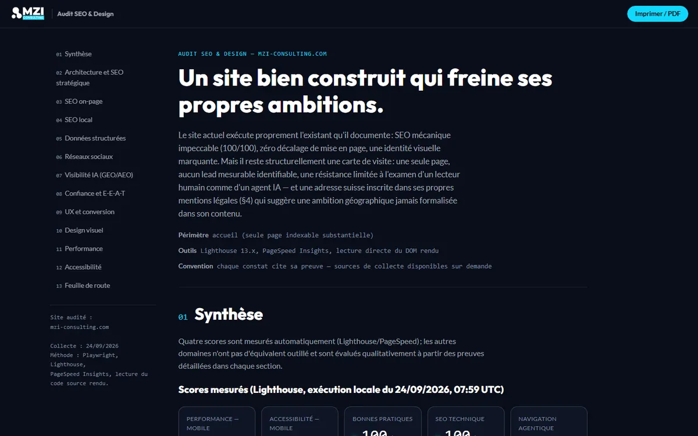
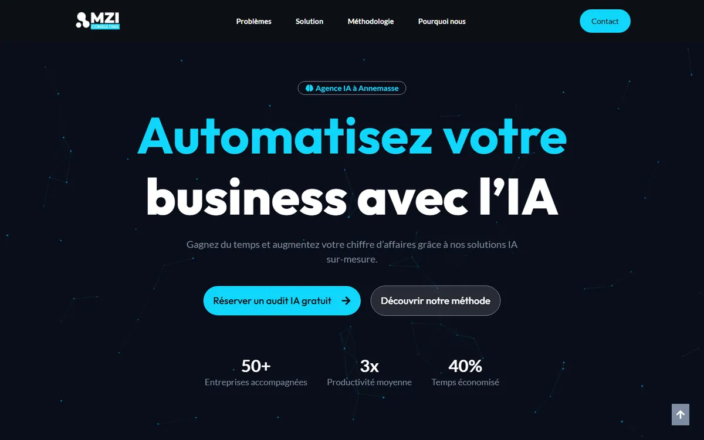
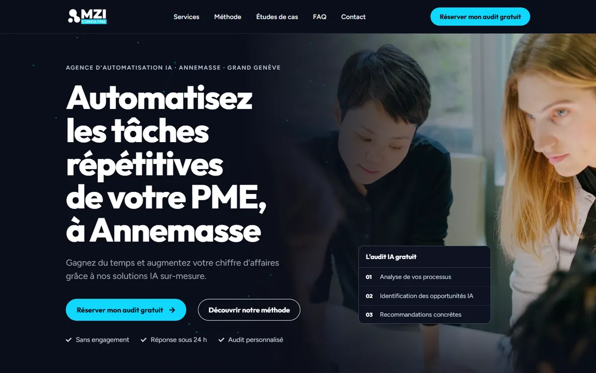
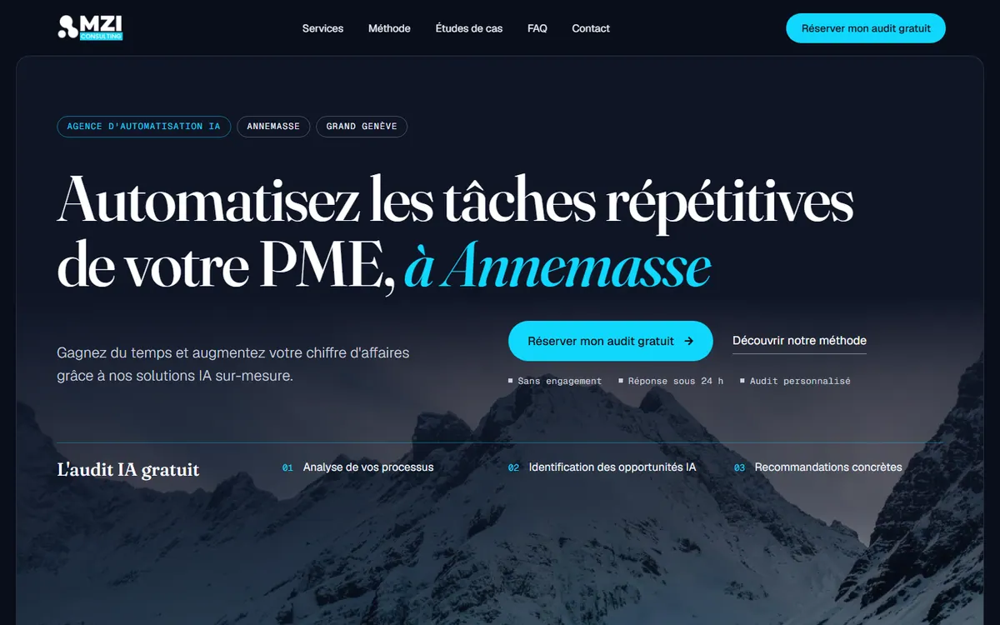

Dossier de propositions
Propositions SEO et design pour MZI Consulting
Lisez dans cet ordre : l’audit, puis la V0, la V1 et la V2, soit environ 10 minutes au total.
Commencer par l’auditLe dossier
Quatre pièces, dans l’ordre de lecture
-

1Diagnostic
Audit
Diagnostic SEO, GEO, UX, performance et accessibilité, avec une feuille de route à 30, 60 et 90 jours.
-

2Point de comparaison
V0 « Existant »
Reproduction fidèle du site actuel, pour comparer chaque proposition à son point de départ.
-

-

Résultats
Ce qui change
Six points mesurés ou vérifiables dans les pages ; le détail des mesures est consigné dans le journal du projet.
-
Un seul libellé d’action
« Réserver mon audit gratuit » partout dans la V1 et la V2, là où le site actuel emploie trois libellés différents pour la même action (audit, §3 et §9).
-
Données structurées complètes
ProfessionalService, Service, FAQPage et BreadcrumbList sont publiés dans la V1 et la V2 ; le site actuel se limite à WebPage, WebSite et Organization (audit, §5).
-
Contrastes AA vérifiés sur les pixels rendus
0 échec en 390, 768 et 1440 px : 214 lignes de texte mesurées sur la page entière de la V1, et 43 couples de couleurs contrôlés sur la V2.
-
Mise en page stable
Sur la V2, une police de secours aux métriques ajustées maintient le CLS sous 0,01 sur 14 largeurs d’écran (0,37 sans ce réglage).
-
LCP plus court que la V0, animations comprises
Sur mobile (Lighthouse, médiane de 3 passages), le LCP est de 3,04 s pour la V1 et de 3,11 s pour la V2, contre 3,49 s pour la V0 hébergée au même endroit ; le site actuel, sur son propre hébergement, affiche 1,30 s. Le titre principal n’est jamais masqué par une animation.
-
Images légères
Les fonds photographiques sont en WebP, en trois tailles (800, 1400 et 2200 px de large) de 200 Ko au maximum, chargés en différé sauf celui du héros.
Comparatif
Site actuel, V1 et V2 : les mesures
| Critère | Site actuel | V1 | V2 |
|---|---|---|---|
| Performance (mobile) | 71 | 88 | 90 |
| Accessibilité (mobile) | 94 | 100 | 100 |
| Bonnes pratiques (mobile) | 100 | 96 | 96 |
| SEO (mobile) | 100 | 63 | 63 |
| LCP | 1,30 s | 3,04 s | 3,11 s |
| CLS | 0,000 | 0,010 | 0,000 |
| TBT | 2 302 ms | 0 ms | 7 ms |
| Poids de la page | 184 Ko | 155 Ko | 356 Ko |
Mesures Lighthouse 13.5.0 du 25 septembre 2026 : mobile (émulation Moto G, réseau 4G lent), médiane de 3 passages. Le site actuel est mesuré sur son propre hébergement ; la V0, reproduction fidèle du site actuel hébergée sur Vercel comme la V1 et la V2 (performance 88, LCP 3,49 s), permet la comparaison à hébergement égal. Le score SEO de la V1 et de la V2 est plafonné par le noindex volontaire de ces maquettes.
Méthode
Cinq outils, une chaîne
- 1CollectePlaywright
- 2AuditSEO, GEO, UX, performance, accessibilité
- 3Design system et maquettesClaude Design
- 4Intégration et contrôlesClaude Code
- 5MesuresLighthouse
Le principe : chaque modification est reliée au constat d’audit qui la justifie ; dans le code de la V1 et de la V2, un commentaire « Audit §n » précède chaque bloc concerné.
Transparence
Ce que ces pages ne sont pas
- Photos d’illustration. Les photos viennent d’Unsplash ; elles sont à remplacer par des photos réelles.
- Données non vérifiées. Chiffres, témoignages et coordonnées absents des sources portent la mention À CONFIRMER dans les maquettes.
- Liens de menu. Ils mènent aux pages de l’arborescence proposée, qui ne sont pas encore créées.
- Maquettes en noindex. Aucune page de ce dossier n’est destinée à être indexée.